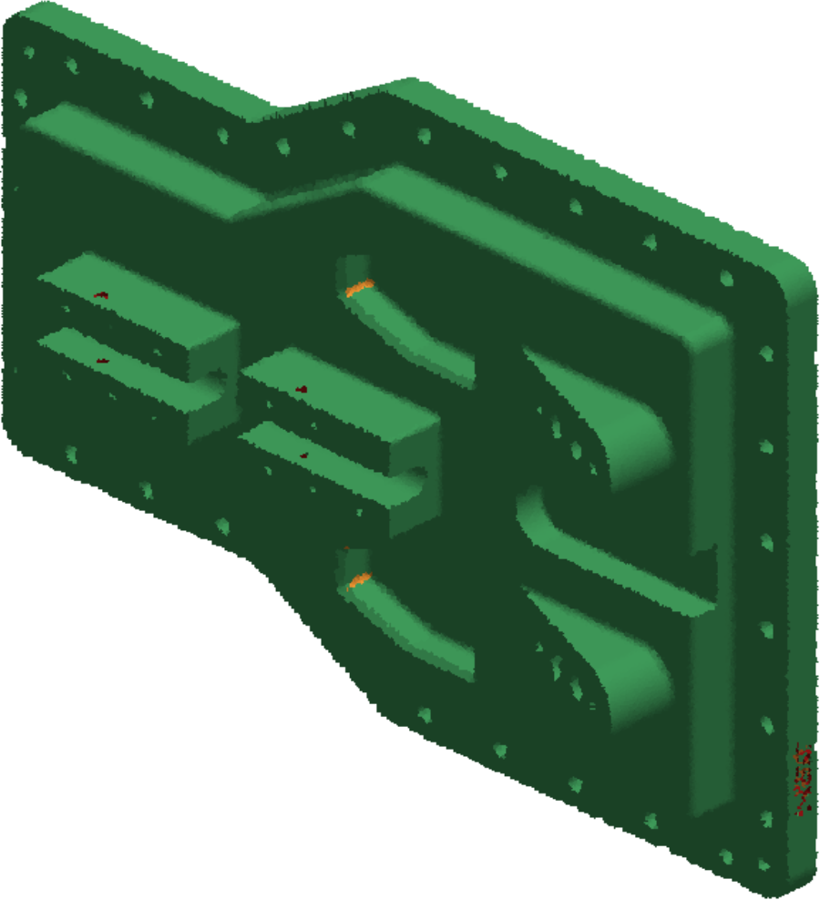

NIST CTC-04 (ASME test case) at scale 0.2, AL6061; held-out validation part
The NIST CTC-04 test part was cut, in simulation, by a program the agent wrote: 99.06% of its surface ends within a tenth of a millimetre of the drawing. The program is invalid: its part-off leaves 31.2 mm² of tab section at one height, over the 30 mm² limit by 1.2 mm². This is the held-out validation run, so the program is reported as it is and was not changed after this result. 9 areas were not machined, mostly 4 small rounded edges or fillets (radius 1 mm) and 3 flat faces: 204 mm² in all, with up to 5 mm of metal left. Elsewhere the areas left are smaller; the largest is 12.61 mm² on a flat face and a curved wall (radius 5 mm: a hole, bore or round). Because the part-off fails, nothing is left out of the score: the tab witness area is scored too.

The simulated part, coloured by result (green = within ±0.1 mm)
Material
AL6061 billet
Stock
32.1 × 162 × 137.5 mm
Workholding
5-axis vise · 12 mm grip · 24 mm stub gap
Cycle time (simulated)
114 min
Setups
6 · 3 orientations
Tolerance
±0.1 mm
Programmed by
LLM agent (Claude Code subagent)
Date
2026-11-21 01:25
Iterations
6 · final = #6
INVALID1 error · 0 warnings
99.06%
of the whole part surface within ±0.1 mm · trusted final evaluation of iteration 6
proud (failed) 0.94%gouged (failed) 0.00%
Nothing is left out of this score: the part-off fails, so the tab witness is scored too. The edge band (1.32%) is scored by its neighbours.
✗ Part-off fails · 2 tabs, 23.92 mm², ≤ 2.6 mm wide✓ Rigidity OK · min 100%✓ Vise clear✓ Harness verified · git 2a3b37d✓ MillBill cross-check 100.000%
The program is invalid: 1 error, first at line 132977: part-off: tabs total 31.2 mm2 at Z-0.2 between the weakest plane and the part (max 30 mm2 at every height up to 0.2 mm below the part). 99.06% of the whole part surface is within ±0.1 mm. Everything else counts as failed: 0.94% is proud (material left) and 0.00% is gouged. Nothing is left out of the score because the part-off fails; the 0.03 mm band along face edges (1.32%) is scored with the deviation of the nearest interior point. Held in one vise by 12 mm of extra stock below a 24 mm stub gap, it is machined in 6 setups (3 table orientations, about 114 min); the part-off at the end leaves 2 tabs (23.92 mm²), but the part-off fails its checks (see Part-off below). Biggest problems: a flat face, on a side: proud 42.27 mm² (worst +5.00 mm; a pass (line 116414, T2) touches the edge of this area but +2.55 mm is left on average: the pass stops short of it, the tool cannot form this shape, or the feature was not machined); a small rounded edge or fillet (radius 1 mm), on a side: proud 33.75 mm² (worst +5.00 mm; no pass reached this); a small rounded edge or fillet (radius 1 mm), on a side: proud 32.93 mm² (worst +5.00 mm; a pass (line 89183, T3) touches the edge of this area but +4.65 mm is left on average: the pass stops short of it, the tool cannot form this shape, or the feature was not machined).
Cutting simulation
Machine view (default): the spindle stays vertical and the table moves the work. To reach each side of the part
the cradle tilts (A axis) and the platter turns (C axis), carrying the vise, the stock and the part. Press play, or click a setup
in the strip under the timeline. Part view: the part stays still and the tool comes in along each setup's axis. The material
is the stock cut by every move, replayed in the browser with the simulator's kernel. Drag to orbit, right-drag or two fingers to pan,
wheel or pinch to zoom (after a click).
How the Machine view works
The machine is a trunnion (table-table) 5-axis mill. The spindle always points straight down and only moves in X, Y and Z.
The A axis tilts the cradle about the machine X axis; the C axis turns the round platter on the cradle; the vise,
the stock and the part sit on the platter and move with it. For each setup the table angles come from the program's
G68.2 tool axis d (in G54 coordinates, from the tool tip towards the holder): A is the tilt of d from vertical
and C its direction around Z (C = 0 when A = 0), the same angles the simulator reports. The table rotation is
R = Rx(A)·Rz(90° − C), which turns d exactly to vertical, under the spindle. Because the A axis lies along machine X,
the platter sits at 90° when A = C = 0, so the part looks turned a quarter turn compared with the Part view. Between setups the
spindle retracts, the table swings (the platter takes the short way round) and the tool comes back down.
The readout shows the tool tip in machine coordinates relative to the rotary centre (where the A and C axes cross), the table
angles A and C, the tool and the current G-code line. In Part view the part stays still and the tool comes in along each setup's
axis instead. Both views replay the same simulated cutting; a self-check in the page confirms that the tool tip relative to the
part is identical in the two views for hundreds of moves of every setup and that the spindle stays vertical.
Loading 3D viewer…
Final result
The target part coloured by how far the simulated part is from it, over the whole surface. Green is within ±0.1 mm;
anything that is not green is a failure (orange to dark red: material left; blue: cut too deep). Purple marks the tab witness, the
small areas where a part-off tab joins the part. Click a marker, a region in the Problems table or the surface itself to see why it failed.
Loading…
The same deviation in six flat views (top, bottom, front, back, left, right): small failures inside holes and on the underside are easier to spot here. Open full size or scroll sideways.
Holding and part-off
The part is machined out of a block held by its bottom in one vise. It must stay connected to the gripped
stub by at least 30% of the stock section until the (PART-OFF) section (line ),
which must machine the underside and leave only small tabs that the operator can break by hand and file flush.
part-off fails 2 tabs, 23.92 mm² in total, widest 2.6 mm.
Tab
Section mm²
Width mm
Centre X, Y, Z (G54)
Tab 1
11.96
2.6
10.04, -62, -1.7
Tab 2
11.96
2.6
10.04, -10, -1.7
2 tabs
23.92
max 2.6
Checked at every height between the stub and the part, the tabs are at most 2.6 mm wide (widest at Z -1.7 mm). Tab witness (part surface within 1 mm of where a tab joins the part): 59.96 mm² = 0.15% of the surface. It is not left out of the score here, because the part-off does not pass.
tabs total 31.2 mm2 at Z-0.2 between the weakest plane and the part (max 30 mm2 at every height up to 0.2 mm below the part)
Limits: total 2–30 mm² and at most 15% of the stub section, each tab at most 3 mm across, at most 4 tabs, witness at most 1.5% of the surface (review target 2–4 tabs, 20–30 mm², witness ≤ 0.5%).
Loading the 3D close-up…
The simulated part after the part-off, seen from the side at the height of the tabs (aluminium = remaining material; the part above, the gripped stub below). Drag to turn, pick a tab with the buttons.Simulator plot of the part-off (underside probe map, per-tab zooms, material section)
From the evaluation's probe data. Open the image for full size.
Rigidity through the program
before the part-off (must stay ≥ 30%)part-off section (must end ≤ 15% and ≥ 2 mm²)violates a limit
0%15%30%50%100%
x: setup number; y: weakest material cross-section across the stub gap as a share of the stock section (5203.6 mm²). Dashed lines: 30% rigidity minimum, 15% part-off maximum.
After setup 1 at Z -23.7 mm: 5184 mm² (100%)After setup 4 at Z -4.03 mm: 1174.5 mm² (23%) · 1 piece · part-offAfter the part-off, at Z -1.7 mm: 23.92 mm² in 2 tabs (the part-off analysis; its 7-plane rigidity scan found 35.75 mm² at Z -0.1, which includes material not connected to the part)
Seen from above, X -16.0604…15.9396 mm left to right, Y up. Filled = material in the plane. Each section is drawn at the plane its caption names (the weakest plane of that check). Only setups that changed the section are shown.
Problems
Click a line number to jump the G-code listing and the animation there; click a region to locate it in the result view.
Out-of-tolerance regions 47
Region
Type
Area mm²
Worst mm
Faces
Where (bounding box, mm)
Why it failed
proud
42.27
+5.000
face 499 (plane), face 484 (plane), face 511 (plane)
normal (-0.01, -1, -0.04)
X 8.5…11.6 · Y -78.0…-77.6 · Z 14.0…25.4
a flat face, on a side
failed: a pass (line 116414, T2) touches the edge of this area but +2.55 mm is left on average: the pass stops short of it, the tool cannot form this shape, or the feature was not machined
nearest passes
proud
33.75
+5.000
face 159 (cylinder r1), face 160 (cylinder r1)
normal (0.91, 0.41, -0)
X -9.5…-7.5 · Y 41.5…43.5 · Z 42.1…47.4
a small rounded edge or fillet (radius 1 mm), on a side
failed: no pass reached this; nearest pass line 90641 (T3, frame 1) missed by 0.145 mm; the harness's quick reach search found no tool for 83% of it (smallest tools, 26 cube directions + feature axes); the search is coarse, so try another direction, a longer or smaller library tool, or a different fixture orientation (the area is scored either way)
nearest passes
proud
32.93
+5.000
face 164 (cylinder r1), face 163 (cylinder r1), face 313 (plane)
normal (-0.89, 0.41, 0.2)
X -9.5…-7.5 · Y 41.5…43.5 · Z 52.5…58.0
a small rounded edge or fillet (radius 1 mm), on a side
failed: a pass (line 89183, T3) touches the edge of this area but +4.65 mm is left on average: the pass stops short of it, the tool cannot form this shape, or the feature was not machined; the harness's quick reach search found no tool for 84% of it (smallest tools, 26 cube directions + feature axes); the search is coarse, so try another direction, a longer or smaller library tool, or a different fixture orientation (the area is scored either way)
nearest passes
proud
31.13
+5.000
face 157 (cylinder r1), face 158 (cylinder r1)
normal (-0.45, 0.89, -0)
X -9.5…-7.5 · Y 1.5…3.5 · Z 52.5…58.0
a small rounded edge or fillet (radius 1 mm), on a side
failed: no pass reached this; nearest pass line 90236 (T3, frame 1) missed by 0.151 mm; the harness's quick reach search found no tool for 91% of it (smallest tools, 26 cube directions + feature axes); the search is coarse, so try another direction, a longer or smaller library tool, or a different fixture orientation (the area is scored either way)
nearest passes
proud
30.14
+5.000
face 152 (cylinder r1), face 153 (cylinder r1)
normal (-0.99, -0.13, 0)
X -9.5…-7.5 · Y 1.5…3.5 · Z 42.0…47.4
a small rounded edge or fillet (radius 1 mm), on a side
failed: a pass (line 47361, T2) touches the edge of this area but +4.62 mm is left on average: the pass stops short of it, the tool cannot form this shape, or the feature was not machined; the harness's quick reach search found no tool for 85% of it (smallest tools, 26 cube directions + feature axes); the search is coarse, so try another direction, a longer or smaller library tool, or a different fixture orientation (the area is scored either way)
nearest passes
proud
15.56
+5.000
face 234 (plane)
normal (0, 0, -1)
X 8.8…11.3 · Y -13.1…-6.8 · Z 0.0…0.0
a flat face, on the underside
failed: a pass (line 132682, T2) touches the edge of this area but +3.63 mm is left on average: the pass stops short of it, the tool cannot form this shape, or the feature was not machined; underside: finish it before the tabs, from the side (flank of a horizontal tool tangent to the face) or with a tilted setup
nearest passes
proud
13.76
+5.000
face 234 (plane)
normal (0, 0, -1)
X 8.8…11.4 · Y -65.1…-58.8 · Z 0.0…0.0
a flat face, on the underside
failed: a pass (line 132682, T2) touches the edge of this area but +4.18 mm is left on average: the pass stops short of it, the tool cannot form this shape, or the feature was not machined; underside: finish it before the tabs, from the side (flank of a horizontal tool tangent to the face) or with a tilted setup
nearest passes
proud
12.61
+0.201
face 245 (plane), face 233 (cylinder r5)
normal (0, 0.5, -0.87)
X 8.8…11.3 · Y 2.7…6.4 · Z 0.4…2.6
a flat face and a curved wall (radius 5 mm: a hole, bore or round), on the underside
failed: passes reach the area (line 132556, T2) but leave +0.19 mm on average: stepover / scallop, the tool radius, or a stop short; underside: finish it before the tabs, from the side (flank of a horizontal tool tangent to the face) or with a tilted setup
nearest passes
proud
8.35
+0.273
face 467 (cylinder r1), face 432 (sphere r1), face 481 (cone)
normal (-0.28, 0.7, -0.66)
X -0.2…4.3 · Y -23.5…-22.5 · Z 33.1…34.2
a small rounded edge or fillet (radius 1 mm) and a sphere face, on a side
failed: passes reach the area (line 95319, T3) but leave +0.18 mm on average: stepover / scallop, the tool radius, or a stop short
nearest passes
proud
8.35
+0.283
face 443 (cylinder r1), face 426 (sphere r1), face 456 (cone)
normal (-0.18, 0.7, 0.7)
X 0.0…4.3 · Y -23.4…-22.1 · Z 65.8…67.0
a small rounded edge or fillet (radius 1 mm) and a sphere face, on a side
failed: no pass reached this; nearest pass line 95915 (T3, frame 1) missed by 0.058 mm
nearest passes
Show 37 smaller regions
Region
Type
Area mm²
Worst mm
Faces
Where (bounding box, mm)
Why it failed
proud
8.19
+0.225
face 468 (cylinder r1), face 430 (sphere r1), face 428 (cylinder r1)
normal (-0.27, 0.65, 0.71)
X -0.2…4.3 · Y -23.4…-22.1 · Z 19.0…20.4
a small rounded edge or fillet (radius 1 mm) and a sphere face, facing up
failed: passes reach the area (line 95313, T3) but leave +0.18 mm on average: stepover / scallop, the tool radius, or a stop short
nearest passes
proud
8.03
+0.262
face 444 (cylinder r1), face 424 (sphere r1), face 446 (cone)
normal (-0.32, 0.68, -0.67)
X -0.2…4.3 · Y -23.4…-22.3 · Z 79.6…80.9
a small rounded edge or fillet (radius 1 mm) and a sphere face, on a side
failed: passes reach the area (line 97138, T3) but leave +0.18 mm on average: stepover / scallop, the tool radius, or a stop short
nearest passes
proud
7.54
+0.242
face 392 (cylinder r1), face 388 (sphere r1), face 389 (cylinder r1)
normal (0.33, -0.66, 0.67)
X 10.0…13.0 · Y 58.2…59.5 · Z 58.0…59.5
a small rounded edge or fillet (radius 1 mm) and a sphere face, on a side
failed: passes reach the area (line 126993, T3) but leave +0.18 mm on average: stepover / scallop, the tool radius, or a stop short
nearest passes
proud
6.23
+0.248
face 391 (cylinder r1), face 384 (cylinder r1), face 390 (sphere r1)
normal (0.31, 0.78, 0.55)
X 9.9…12.9 · Y -60.5…-59.0 · Z 58.0…59.4
a small rounded edge or fillet (radius 1 mm), on a side
failed: passes reach the area (line 118562, T3) but leave +0.18 mm on average: stepover / scallop, the tool radius, or a stop short
nearest passes
proud
6.06
+0.381
face 235 (cylinder r5)
normal (0, -0.64, -0.76)
X 8.8…11.4 · Y -77.0…-75.1 · Z 0.5…2.0
a curved wall (radius 5 mm: a hole, bore or round), on the underside
failed: passes reach the area (line 132515, T2) but leave +0.24 mm on average: stepover / scallop, the tool radius, or a stop short; underside: finish it before the tabs, from the side (flank of a horizontal tool tangent to the face) or with a tilted setup
nearest passes
proud
5.9
+0.280
face 379 (cylinder r1), face 378 (sphere r1), face 372 (cylinder r1)
normal (0.34, 0.61, -0.72)
X 9.9…13.1 · Y -60.5…-59.2 · Z 40.5…42.0
a small rounded edge or fillet (radius 1 mm) and a sphere face, on the underside
failed: passes reach the area (line 107009, T2) but leave +0.20 mm on average: stepover / scallop, the tool radius, or a stop short
nearest passes
proud
5.9
+0.256
face 357 (cylinder r1), face 356 (sphere r1), face 362 (cylinder r1)
normal (0.25, -0.81, -0.53)
X 9.9…13.0 · Y 58.5…59.5 · Z 41.0…42.0
a small rounded edge or fillet (radius 1 mm) and a sphere face, on a side
failed: passes reach the area (line 123438, T3) but leave +0.20 mm on average: stepover / scallop, the tool radius, or a stop short
nearest passes
proud
5.73
+0.168
face 435 (cylinder r1), face 407 (sphere r1), face 450 (cone)
normal (-0.18, -0.69, -0.7)
X -0.1…4.0 · Y 1.9…2.6 · Z 75.9…76.6
a small rounded edge or fillet (radius 1 mm) and a sphere face, on a side
failed: passes reach the area (line 95642, T3) but leave +0.14 mm on average: stepover / scallop, the tool radius, or a stop short
nearest passes
proud
5.73
+0.269
face 369 (cylinder r1), face 363 (sphere r1), face 362 (cylinder r1)
normal (0.3, -0.76, 0.58)
X 9.9…13.1 · Y 58.4…59.5 · Z 27.0…28.4
a small rounded edge or fillet (radius 1 mm) and a sphere face, on a side
failed: passes reach the area (line 107063, T2) but leave +0.21 mm on average: stepover / scallop, the tool radius, or a stop short
nearest passes
proud
5.41
+0.244
face 380 (cylinder r1), face 376 (sphere r1), face 374 (cylinder r1)
normal (0.36, 0.63, 0.69)
X 9.9…13.0 · Y -60.5…-59.1 · Z 14.0…15.2
a small rounded edge or fillet (radius 1 mm) and a sphere face, on a side
failed: passes reach the area (line 122376, T3) but leave +0.18 mm on average: stepover / scallop, the tool radius, or a stop short
nearest passes
proud
5.41
+0.257
face 354 (cylinder r1), face 353 (sphere r1), face 387 (plane)
normal (0.39, -0.66, -0.64)
X 9.9…13.0 · Y 58.5…59.5 · Z 71.8…73.0
a small rounded edge or fillet (radius 1 mm) and a sphere face, on a side
failed: passes reach the area (line 121599, T3) but leave +0.18 mm on average: stepover / scallop, the tool radius, or a stop short
nearest passes
proud
5.24
+0.190
face 438 (cylinder r1), face 416 (sphere r1), face 415 (cylinder r1)
normal (-0.3, -0.74, 0.61)
X 0.1…4.3 · Y 1.6…2.6 · Z 70.0…71.0
a small rounded edge or fillet (radius 1 mm) and a sphere face, on a side
failed: passes reach the area (line 97155, T3) but leave +0.13 mm on average: stepover / scallop, the tool radius, or a stop short
nearest passes
proud
4.91
+0.164
face 458 (cylinder r1), face 412 (sphere r1), face 461 (plane)
normal (-0.29, -0.82, -0.5)
X 0.1…4.3 · Y 1.4…2.6 · Z 29.1…30.0
a small rounded edge or fillet (radius 1 mm) and a sphere face, on a side
failed: passes reach the area (line 97638, T3) but leave +0.14 mm on average: stepover / scallop, the tool radius, or a stop short
nearest passes
proud
4.26
+0.758
face 71 (cone), face 72 (cone)
normal (-0.93, 0.32, -0.18)
X 1.4…2.3 · Y -48.8…-47.4 · Z 68.1…69.8
a chamfer or conical face, on a side
failed: no pass reached this; nearest pass line 75966 (T2, frame 1) missed by 13.146 mm
nearest passes
proud
4.26
+0.621
face 90 (cone), face 91 (cone)
normal (-0.94, 0.33, 0.05)
X 1.7…2.3 · Y -48.6…-47.3 · Z 30.2…31.9
a chamfer or conical face, on a side
failed: no pass reached this; nearest pass line 73926 (T2, frame 1) missed by 13.137 mm
nearest passes
proud
4.26
+0.699
face 65 (cone), face 66 (cone)
normal (-1, 0.01, 0.02)
X 10.2…10.7 · Y 71.4…73.4 · Z 78.9…80.7
a chamfer or conical face, on a side
failed: passes reach the area (line 99857, T4) but leave +0.39 mm on average: stepover / scallop, the tool radius, or a stop short
nearest passes
proud
4.1
+0.273
face 343 (cylinder r1), face 342 (sphere r1), face 346 (plane)
normal (0.27, 0.65, -0.71)
X 9.9…13.1 · Y -60.5…-59.4 · Z 84.8…86.0
a small rounded edge or fillet (radius 1 mm) and a sphere face, on the underside
failed: passes reach the area (line 128201, T3) but leave +0.21 mm on average: stepover / scallop, the tool radius, or a stop short
nearest passes
proud
3.93
+0.661
face 86 (cone), face 85 (cone), face 84 (cylinder r1.2)
normal (-0.91, 0.34, 0.25)
X -1.2…-0.4 · Y -55.3…-53.7 · Z 29.8…31.9
a chamfer or conical face, on a side
failed: passes reach the area (line 100192, T4) but leave +0.33 mm on average: stepover / scallop, the tool radius, or a stop short
nearest passes
proud
3.93
+0.170
face 463 (cylinder r1), face 418 (sphere r1), face 475 (cone)
normal (-0.24, -0.82, 0.52)
X -0.1…4.3 · Y 1.7…2.6 · Z 23.4…24.4
a small rounded edge or fillet (radius 1 mm) and a sphere face, on a side
failed: passes reach the area (line 95453, T3) but leave +0.14 mm on average: stepover / scallop, the tool radius, or a stop short
nearest passes
proud
3.77
+3.535
face 138 (cylinder r0.6647), face 114 (cone), face 139 (cylinder r0.6647)
normal (-0.87, -0.43, -0.26)
X -6.2…-5.6 · Y 37.7…38.7 · Z 54.6…55.9
a small rounded edge or fillet (radius 0.6647 mm) and a chamfer or conical face, on a side
failed: a pass (line 99069, T8) touches the edge of this area but +0.70 mm is left on average: the pass stops short of it, the tool cannot form this shape, or the feature was not machined
nearest passes
proud
3.77
+0.612
face 0 (cone), face 248 (cone)
normal (-1, -0.02, -0.02)
X 10.2…10.7 · Y -73.9…-72.1 · Z 4.5…5.8
a chamfer or conical face, on a side
failed: no pass reached this; nearest pass line 116360 (T2, frame 3) missed by 4.137 mm
nearest passes
proud
3.6
+0.690
face 77 (cone), face 76 (cone), face 75 (cylinder r1.2)
normal (-0.88, 0.48, -0.01)
X -1.2…-0.4 · Y -55.4…-53.6 · Z 67.9…70.0
a chamfer or conical face, on a side
failed: passes reach the area (line 100392, T4) but leave +0.31 mm on average: stepover / scallop, the tool radius, or a stop short
nearest passes
proud
3.6
+0.588
face 81 (cone), face 116 (cone)
normal (-0.91, 0.41, -0.01)
X 2.0…2.5 · Y -42.3…-40.9 · Z 30.2…31.8
a chamfer or conical face, on a side
failed: passes reach the area (line 100250, T4) but leave +0.33 mm on average: stepover / scallop, the tool radius, or a stop short
nearest passes
proud
3.28
+5.000
face 103 (cone), face 118 (cylinder r0.6647), face 104 (cone)
normal (-0.94, -0.03, 0.34)
X -6.2…-5.6 · Y -11.7…-10.3 · Z 44.1…45.3
a chamfer or conical face and a small rounded edge or fillet (radius 0.6647 mm), on a side
failed: a pass (line 97999, T8) touches the edge of this area but +0.98 mm is left on average: the pass stops short of it, the tool cannot form this shape, or the feature was not machined
nearest passes
proud
3.11
+0.476
face 97 (cone), face 131 (cylinder r0.6647), face 110 (cone)
normal (-0.99, 0.05, 0.15)
X -6.2…-5.6 · Y 46.4…47.4 · Z 44.1…45.4
a chamfer or conical face and a small rounded edge or fillet (radius 0.6647 mm), on a side
failed: passes reach the area (line 98534, T8) but leave +0.29 mm on average: stepover / scallop, the tool radius, or a stop short
nearest passes
proud
2.95
+3.420
face 92 (cone), face 115 (cone), face 141 (cylinder r0.6647)
normal (-0.99, -0.09, -0.12)
X -6.2…-5.5 · Y 46.4…47.4 · Z 54.7…55.9
a chamfer or conical face, on a side
failed: a pass (line 99176, T8) touches the edge of this area but +0.69 mm is left on average: the pass stops short of it, the tool cannot form this shape, or the feature was not machined
nearest passes
proud
2.78
+0.458
face 120 (cylinder r0.6647), face 105 (cone), face 121 (cylinder r0.6647)
normal (-0.8, -0.41, 0.44)
X -6.2…-5.7 · Y -2.6…-1.4 · Z 44.1…45.3
a small rounded edge or fillet (radius 0.6647 mm) and a chamfer or conical face, on a side
failed: passes reach the area (line 98106, T8) but leave +0.28 mm on average: stepover / scallop, the tool radius, or a stop short
nearest passes
proud
2.78
+5.000
face 94 (cone), face 137 (cylinder r0.6647), face 136 (cylinder r0.6647)
normal (-1, 0.07, 0.04)
X -6.2…-5.6 · Y 28.4…29.6 · Z 54.6…55.9
a chamfer or conical face and a small rounded edge or fillet (radius 0.6647 mm), on a side
failed: a pass (line 98959, T8) touches the edge of this area but +0.85 mm is left on average: the pass stops short of it, the tool cannot form this shape, or the feature was not machined
nearest passes
proud
2.78
+0.494
face 142 (cone), face 79 (cone)
normal (-0.86, 0.47, 0.2)
X -5.3…-4.5 · Y -60.0…-58.8 · Z 68.2…69.6
a chamfer or conical face, on a side
failed: no pass reached this; nearest pass line 53023 (T2, frame 1) missed by 3.021 mm
nearest passes
proud
2.62
+0.391
face 129 (cylinder r0.6647), face 128 (cylinder r0.6647), face 98 (cone)
normal (-0.88, 0.01, 0.48)
X -6.2…-5.7 · Y -11.6…-10.5 · Z 54.6…55.9
a small rounded edge or fillet (radius 0.6647 mm), on a side
failed: passes reach the area (line 98640, T8) but leave +0.28 mm on average: stepover / scallop, the tool radius, or a stop short
nearest passes
proud
2.62
+0.591
face 80 (cone), face 117 (cone), face 151 (cylinder r1.0106)
normal (-0.77, 0.58, 0.26)
X -5.5…-4.6 · Y -60.2…-58.6 · Z 30.2…31.3
a chamfer or conical face, on a side
failed: passes reach the area (line 100308, T4) but leave +0.26 mm on average: stepover / scallop, the tool radius, or a stop short
nearest passes
proud
2.46
+5.000
face 134 (cylinder r0.6647), face 112 (cone), face 95 (cone)
normal (-0.89, -0.43, -0.15)
X -6.2…-5.6 · Y 28.4…29.6 · Z 44.1…45.4
a small rounded edge or fillet (radius 0.6647 mm) and a chamfer or conical face, on a side
failed: a pass (line 98319, T8) touches the edge of this area but +0.88 mm is left on average: the pass stops short of it, the tool cannot form this shape, or the feature was not machined
nearest passes
proud
2.29
+4.883
face 126 (cylinder r0.6647), face 127 (cylinder r0.6647), face 108 (cone)
normal (-0.74, -0.64, 0.21)
X -6.2…-5.8 · Y -2.5…-1.3 · Z 54.6…55.8
a small rounded edge or fillet (radius 0.6647 mm), on a side
failed: a pass (line 98748, T8) touches the edge of this area but +1.53 mm is left on average: the pass stops short of it, the tool cannot form this shape, or the feature was not machined
nearest passes
proud
2.29
+0.647
face 143 (cone), face 78 (cone), face 168 (cylinder r1.0106)
normal (-0.9, 0.43, -0)
X 1.7…2.6 · Y -42.4…-41.0 · Z 68.2…69.6
a chamfer or conical face, on a side
failed: passes reach the area (line 100450, T4) but leave +0.26 mm on average: stepover / scallop, the tool radius, or a stop short
nearest passes
proud
2.13
+5.000
face 107 (cone), face 124 (cylinder r0.6647), face 125 (cylinder r0.6647)
normal (-0.8, -0.54, -0.26)
X -6.2…-5.8 · Y 6.4…7.6 · Z 54.6…55.9
a chamfer or conical face and a small rounded edge or fillet (radius 0.6647 mm), on a side
failed: a pass (line 98853, T8) touches the edge of this area but +0.60 mm is left on average: the pass stops short of it, the tool cannot form this shape, or the feature was not machined
nearest passes
proud
2.13
+5.000
face 96 (cone), face 132 (cylinder r0.6647), face 111 (cone)
normal (-0.98, 0.04, -0.18)
X -6.2…-5.6 · Y 37.4…38.6 · Z 44.1…45.4
a chamfer or conical face and a small rounded edge or fillet (radius 0.6647 mm), on a side
failed: a pass (line 98425, T8) touches the edge of this area but +1.18 mm is left on average: the pass stops short of it, the tool cannot form this shape, or the feature was not machined
nearest passes
proud
1.64
+5.000
face 123 (cylinder r0.6647), face 101 (cone), face 106 (cone)
normal (-0.93, -0.03, 0.36)
X -6.2…-5.7 · Y 6.4…7.6 · Z 44.2…45.0
a small rounded edge or fillet (radius 0.6647 mm) and a chamfer or conical face, on a side
failed: a pass (line 98213, T8) touches the edge of this area but +0.76 mm is left on average: the pass stops short of it, the tool cannot form this shape, or the feature was not machined
nearest passes
Safety, fixture & plausibility issues 1
error
part-off: tabs total 31.2 mm2 at Z-0.2 between the weakest plane and the part (max 30 mm2 at every height up to 0.2 mm below the part) part-off
line
Setups
Contiguous blocks of one tool orientation (G68.2 … G69), with the trunnion angles the table turns to. Click a setup to play from it; vise contact is highlighted.
Setup
Orientation (trunnion A / C)
Lines
Tools
Moves
Removed cm³
Connection after
Vise contact
A90 C-180
axis (-1, 0, 0) · IJK -90 90 0
–99863
T1 T2 T3 T4 T7 T8
189,303
308.061
100%
none
A90 C158
axis (-0.9272, 0.3746, 0) · IJK -111.999 90 0
–100514
T2 T3 T4
25,559
0.421
100%
none
A90 C0
axis (1, 0, 0) · IJK 90 90 0
–132188
T1 T2 T3 T4 T9
113,330
91.435
100%
none
A90 C-180
axis (-1, 0, 0) · IJK -90 90 0
–132564
T2
368
23.902
23% · part-off
none
A90 C-180
axis (-1, 0, 0) · IJK -90 90 0
–132601
T4
1,504
0.014
23% · part-off
none
A90 C0
axis (1, 0, 0) · IJK 90 90 0
–132977
T2 T3
354
5.367
1% · part-off
none
Iteration history
Score per simulated iteration and the agent's own notes on what it changed.
Every area counts in every score; the notes are the agent's working comments and do not change any number.
Whole part surface in toleranceevaluated iteration
85%90%95%100%
Score axis zoomed to 85–100 %. Values as simulated at each iteration.
Iteration 6
validevaluated2026-11-21 04:29:17
99.18%+0.29 pts
whole surface in tolerance, as simulated at the time
Iteration 6: iteration 5 is the first valid program (98.89 %, 123 min). This one targets cycle time and the D1.33 holes.
T3 rest roughing was 58 min because it followed the (conservative) stock model along every wall; it is now limited geometrically to where a D3 disc fits but no D6 (or D10 on the +X side) disc could reach.
Rest-finish mask uses a 0.12 mm (was 0.06) margin, so T3 no longer chases pixel-thin strips along walls T2 finished.
T8 bores the D1.33 blind holes to 4.9 mm instead of 2.6 mm: the hole above is bored by the flutes before the shank arrives (the same works for the 6 mm deep flange holes with the 5 mm flute T4).
Iteration 5
valid2026-11-21 04:11:45
98.89%+0.06 pts
whole surface in tolerance, as simulated at the time
proud
1.11%
gouge
0.00%
setups
6
errors
0
cycle
123.3 min
lines / moves
140074 / 315111
Cycle time -19.4 min against iteration 4, score changed. Main change: iteration 4 = 98.84 % with one error.
Iteration 5: iteration 4 = 98.84 % with one error (T3 rest rough skimmed the 0.1 mm step between the T2 and T3 allowances along a 10.5 mm ear wall: shank contact). T3 rest roughing now uses the same 0.25 mm allowance as T2, so it only works where T2 could not reach. Part-off: each -X step now returns along the flat Z-3 line as well, so the slab Z-6..0 is open over the full length; that lets T4 bore the r1.21 blind hole at Y-73 Z5.28 from -X inside the part-off section (its D20 holder hit the stub in the side setup).
Iteration 4
invalid · 1 err2026-11-21 03:53:46
98.84%+4.63 pts
whole surface in tolerance, as simulated at the time
proud
1.16%
gouge
0.00%
setups
5
errors
1
cycle
142.8 min
lines / moves
143683 / 317311
Why invalid:
line 47780: material contact above the flute length (shank rubbing / tool too short); first at line 47780 (frame 1, T3, move ends at G54 (-2.56, -63.56, 64.96)), removed column up to 10.50 mm (material left by earlier setups counts too)
Iteration 4: iteration 3 dropped to 94.2 %: the new holder check used the tool keep-out box (stub extended to X+-30 and Y+-200 so tool centres stay above Z0), which made every holder near the stub look blocked, so T2/T3 left the bottom 19 mm of the part unfinished (1915 mm2) and the leftovers caused a rapid crash and an overloaded T4 entry.
Holder clearance is now checked against the real geometry: part + real stub (X+-16.06) + vise boxes.
Everything else as in iteration 3 (flush stub, holder-aware fields, low flange holes from +X, T3 rest rough on +X).
Iteration 3
invalid · 3 err2026-11-21 03:33:12
94.20%-4.69 pts
whole surface in tolerance, as simulated at the time
Cycle time +25.6 min against iteration 2, score changed. Main change: iteration 2 scored 98.9 % with 3 errors.
Why invalid:
line 119512: rapid (G0) move removes material - crash; first at line 119512 (frame 1, T4, move ends at G54 (6.56, -74.65, 13.00)), removed column up to 2.55 mm (material left by earlier setups counts too)
line 47425: material contact above the flute length (shank rubbing / tool too short); first at line 47425 (frame 1, T3, move ends at G54 (-2.56, -63.56, 26.96)), removed column up to 10.50 mm (material left by earlier setups counts too)
line 119514: cut cross-section > 0.75 D^2 for T4 (overloaded: too deep and too wide); worst 4.52 mm2 > limit 1.69 mm2 at line 119514 (move to 73.39, 13.22, -23.09, removed column up to 3.02 mm deep)
Iteration 3: iteration 2 scored 98.9 % with 3 errors.
Stub keep-out now enters the distance field without the roughing allowance (tools left a 0.25 mm skin on the stub top that a later deep pass rubbed with the shank: flute-length error).
Holder-aware tool-centre field (holder disc must clear everything above the stick-out) for every rough/finish op.
Flange holes within 11 mm of Z0 are bored full depth from +X (from -X the D20 holder of T4 touched the stub).
+X setup gets a T3 rest rough before finishing (T3 rest finish under the taper was overloaded) and a T4 pocket-corner pass that was dropped again (48k lines, ~35 mm2 gain).
Iteration 2
invalid · 3 err2026-11-21 03:03:17
98.89%+9.32 pts
whole surface in tolerance, as simulated at the time
proud
1.11%
gouge
0.00%
setups
5
errors
3
cycle
119.9 min
lines / moves
137682 / 314307
Why invalid:
line 26428: material contact above the flute length (shank rubbing / tool too short); first at line 26428 (frame 1, T2, move ends at G54 (4.94, -83.41, 3.25)), removed column up to 21.12 mm (material left by earlier setups counts too)
line 108329: tool holder collides with material (stick-out too short for this depth); first at line 108329 (frame 1, T4, move ends at G54 (6.06, 8.35, 8.60)), removed column up to 0.00 mm (material left by earlier setups counts too)
line 135533: cut cross-section > 0.75 D^2 for T3 (overloaded: too deep and too wide); worst 10.07 mm2 > limit 6.75 mm2 at line 135540 (move to 9.31, 2.46, -9.50, removed column up to 3.34 mm deep)
Iteration 2: fixes from iteration 1 (89.6 %, invalid).
Depth links between rings are now checked against the tool-centre validity field (iter 1 links cut the ear ends, 5 mm gouge).
Keep-out below Z0 extended over the whole Y range (T2 holder hit the jaws on rings that wandered under Y>81); stub roughed with zero allowance so no 23 mm skin is left for the finisher (flute-length errors); T3 limited to 20.5 mm depth.
Finishing band rule without tolerance gap + full contour at fillet tops and at the last level: walls above fillets were 0.1-0.15 proud and the +X flange outline was never finished.
Ear-face level taken from the real face height (+0.02); T9 countersinks by small helical orbit (not centre-cutting); part-off profile capped at Z+0.5 so the slab is horizontal (iter 1 left the stub connected beyond Y+5).
Iteration 1
invalid · 8 err2026-11-21 02:31:31
89.57%
whole surface in tolerance, as simulated at the time
line 32188: material contact above the flute length (shank rubbing / tool too short); first at line 32188 (frame 1, T2, move ends at G54 (6.81, 14.74, 3.25)), removed column up to 23.00 mm (material left by earlier setups counts too)
line 57421: tool holder collides with material (stick-out too short for this depth); first at line 57421 (frame 1, T3, move ends at G54 (6.13, 78.94, 16.05)), removed column up to 0.06 mm (material left by earlier setups counts too)
line 30314: tool holder (D32) of T2 hits the fixed vise jaw (-Y) (first at line 30314, frame 1; vise boxes are in setup.json; holder is a cylinder from the stick-out to 50 mm above it)
line 30265: tool holder (D32) of T2 hits the moving vise jaw (+Y) (first at line 30265, frame 1; vise boxes are in setup.json; holder is a cylinder from the stick-out to 50 mm above it)
… 4 more (see feedback)
Iteration 1: up=-X fixture (100 mm tall, flange edge on the stub). Setups: A90 from -X (complex side), A90 normal to the 22 deg ear faces, A90 from +X (flat face/pockets/outline), part-off from +/-X with T2 on the Z-3 centre line. Own heightmap + distance-field z-level engine: rough T1, rest T2/T3, finish T2 + T3 rest with fine steps in fillet, round-over and chamfer bands; T7 ball on the arch roofs; helix bores for all holes; T9 countersinks. Part-off leaves a 2.6 mm web under the flange strip, cut to two 2.6 x 7.5 tabs at Y-62 and Y-10 with T3.
Metrics & tools
Metrics
Whole part surface in tolerance (score)
99.06 %
Whole surface proud (material left): failed
0.94 %
Whole surface gouged (cut too deep): failed
0.00 %
Proud area
384.49 mm²
Gouged area
0.00 mm²
Max material left
5.000 mm
Max gouge depth
0.021 mm
Tab witness excluded (part-off tab joints)
0.00 %
Tab witness area
0.00 mm²
Edge band (0.03 mm along face edges), scored with the nearest interior deviation
1.32 %
Part-off tabs
2
Tab section, total
23.92 mm²
Widest tab (smallest direction)
2.60 mm
Setups (contiguous orientations)
6
Distinct tool orientations
3
Part surface area
40960.30 mm²
Scored area
40960.30 mm²
Surface probe points
250031
Estimated cycle time (incl. indexing)
114.32 min
Errors
1
Warnings
0
Tools used
Tool
Name
Type
Ø mm
Stick-out
Holder Ø
Time min
Cut m
Removed cm³
T1
10 mm 3-flute flat endmill
flat
10
40
32
13.0
30.49
341.37
T2
6 mm 3-flute flat endmill
flat
6
30
32
40.4
85.82
76.95
T3
3 mm 2-flute flat endmill
flat
3
22
32
38.8
28.90
9.31
T4
1.5 mm 2-flute flat endmill
flat
1.5
14
20
13.8
6.51
1.33
T7
3 mm ball endmill
ball
3
22
32
2.3
2.13
0.10
T8
1 mm ball endmill
ball
1
12
20
3.4
1.26
0.08
T9
6 mm 90deg chamfer mill
cone 90°
6
25
32
1.3
0.51
0.06
Estimated cycle time 114.3 min (feeds as programmed, rapids at 15000 mm/min, 6 s per re-orientation).
Images
2D plots written for the agent's brief and feedback (the same information as the 3D views above).
Show simulator plots
Surface deviation, 6 views: green in tolerance, orange to red proud, blue gouge, purple tab witness